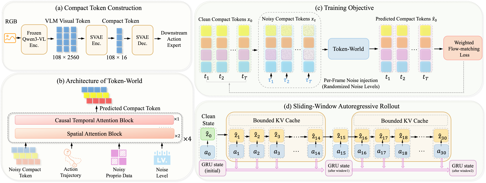
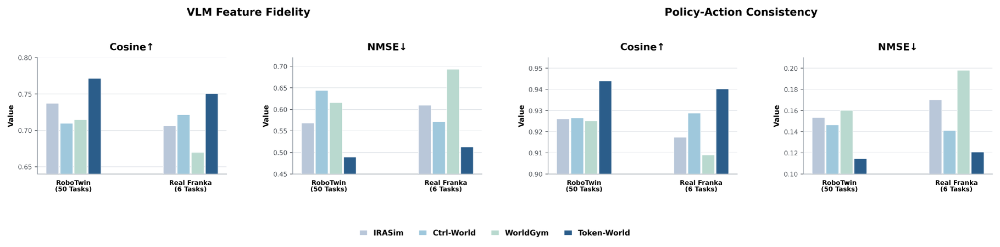
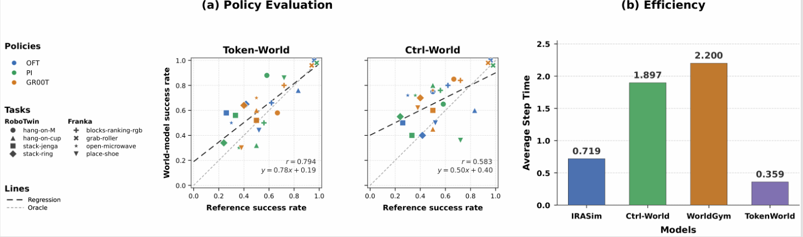
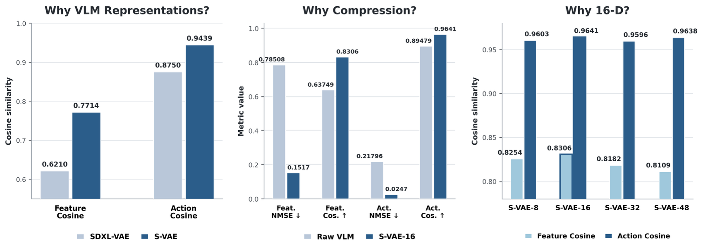

Token-World: World Modeling in Vision-Language Model Token Space for Robot Manipulation
1 Southern University of Science and Technology 2 State Key Laboratory of Multimedia Information Processing, School of Computer Science, Peking University 3 Hong Kong University of Science and Technology 4 Institute of Automation, Chinese Academy of Sciences 5 University of Pennsylvania 6 MUKA Robotics
Method Overview

Method figure placeholderassets/method_overview.png
Qualitative Results
Quantitative Results

Open-loop prediction figure placeholderassets/open_loop_prediction.png

Policy evaluation and efficiency figure placeholderassets/policy_evaluation_efficiency.png
Ablations

Ablation figure placeholderassets/ablation.png